9：15 酒店出發，難得今天可以晚點起床（7：45），不過要練習（看看酒店的健身房），所以6：10起床開幹！
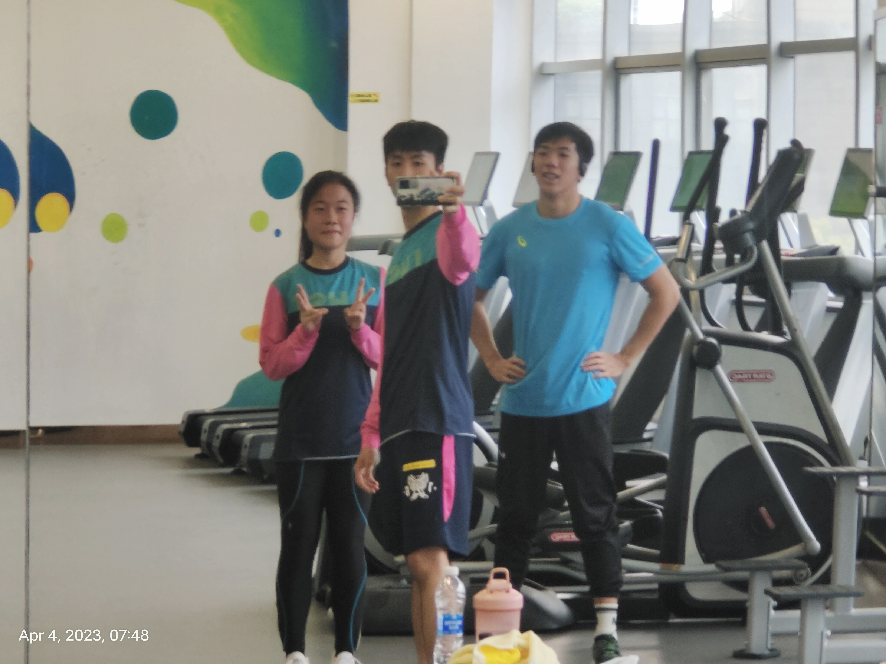
早課
10：00 中國數位音樂科技展廳（裏面有一個用音樂和藥放鬆的玩意兒😇，圖三）。EMMM...主席用音樂留言機唱了只因你太美。
11：40 雲棲小鎮。
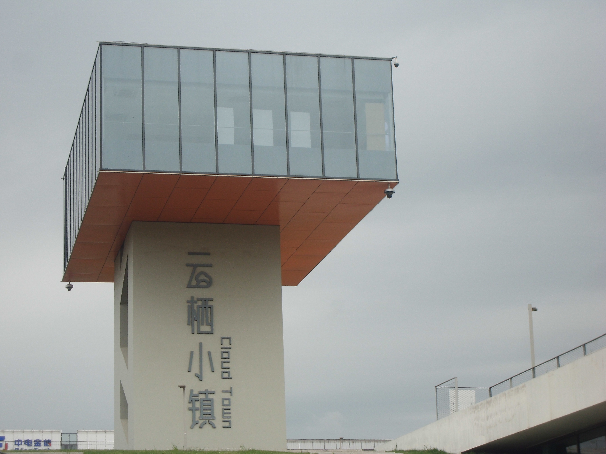
門牌
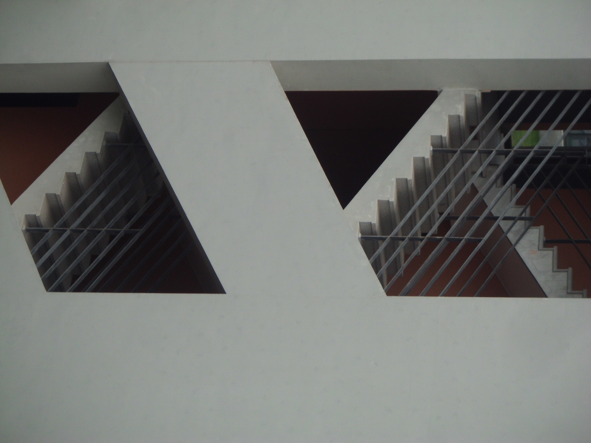
構圖🥰
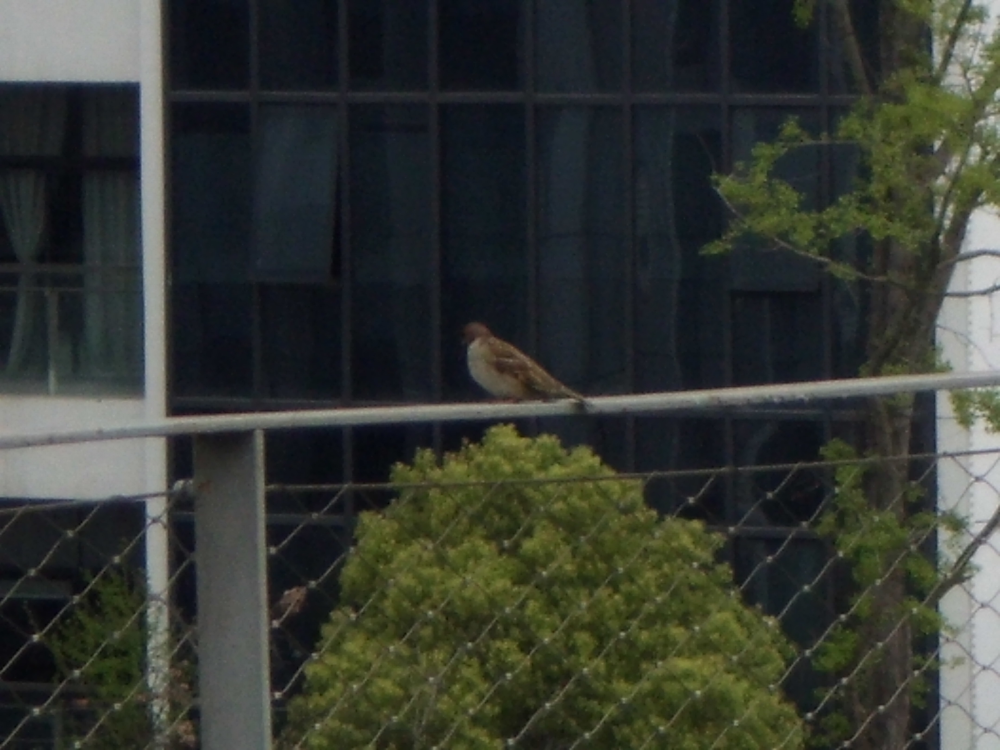
鳥倦飛而知還
『雲』無心以出岫
『雲』無心以出岫
馬雲跑過的跑道
颳風這天
12：30 LUnch Time。
14：30 蕭山機器人小鎮（還蠻多好玩的機器人，不過很多都沒拍照😑）。
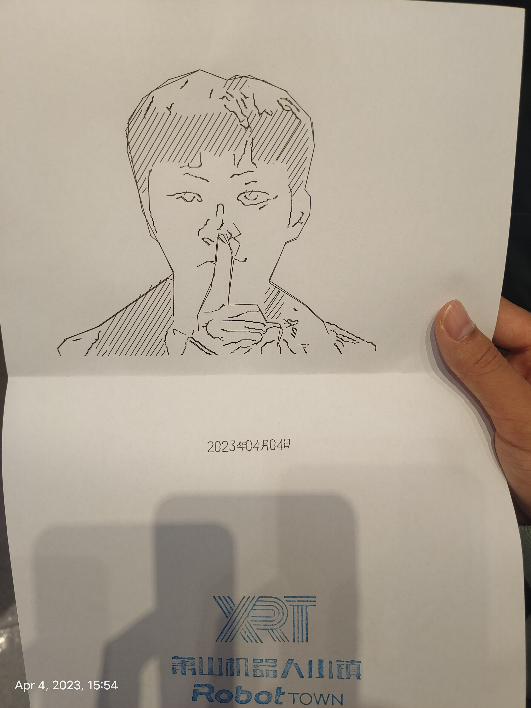
看全過程
機器人幫我畫的🤣
機器人幫我畫的🤣
17：00 錢江新城——城市陽臺（開始下雨了🌧️☔）。
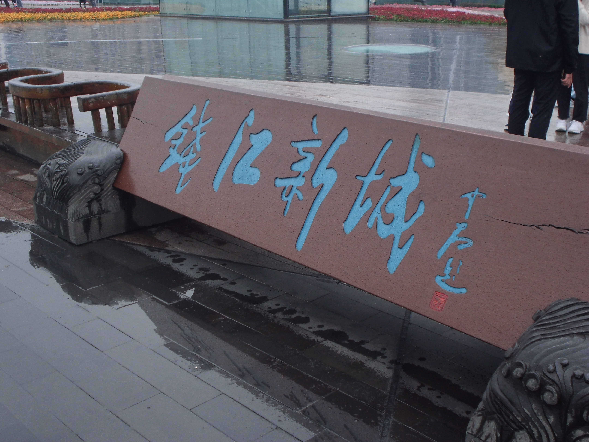
門牌
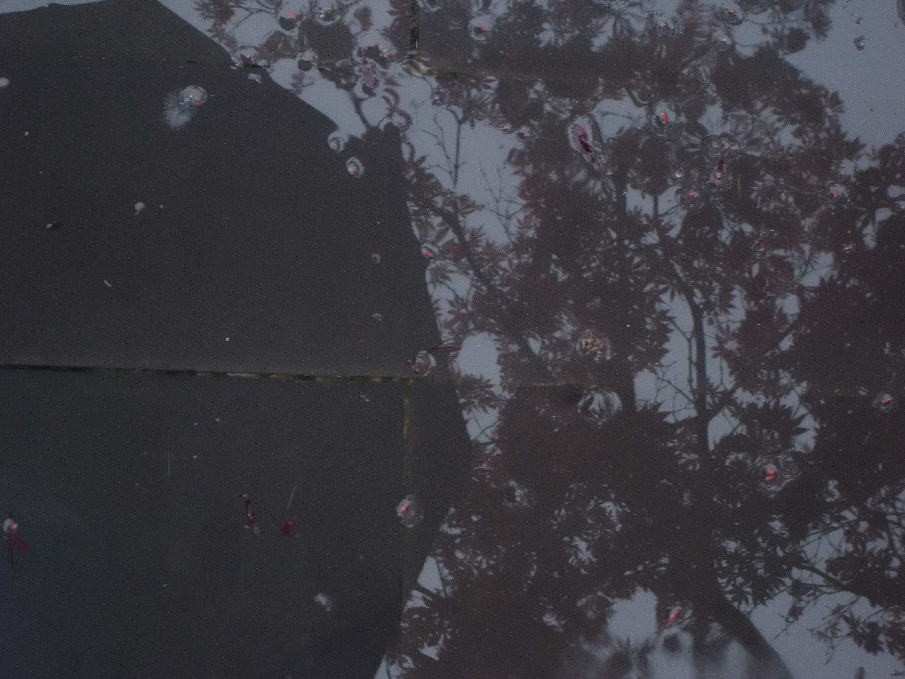
地板如鏡
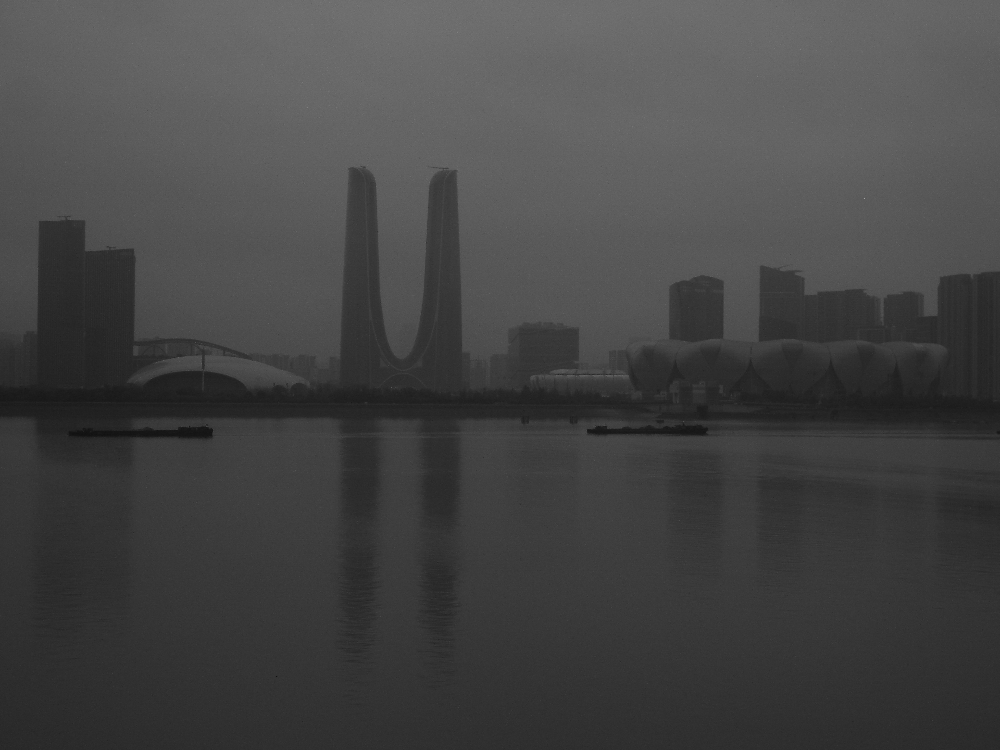
灰濛濛（黑白）
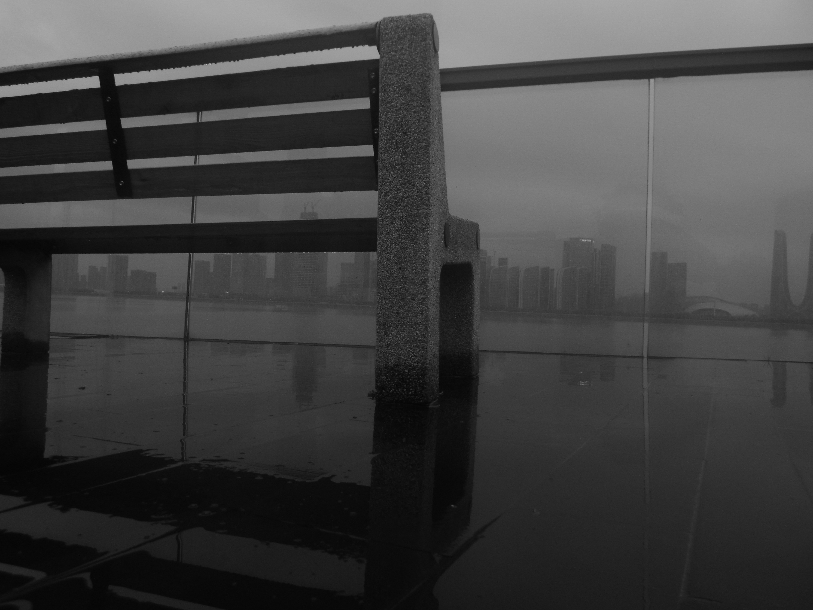
長椅『眺望』遠方
EMM...接下來，偶遇郎朗了。
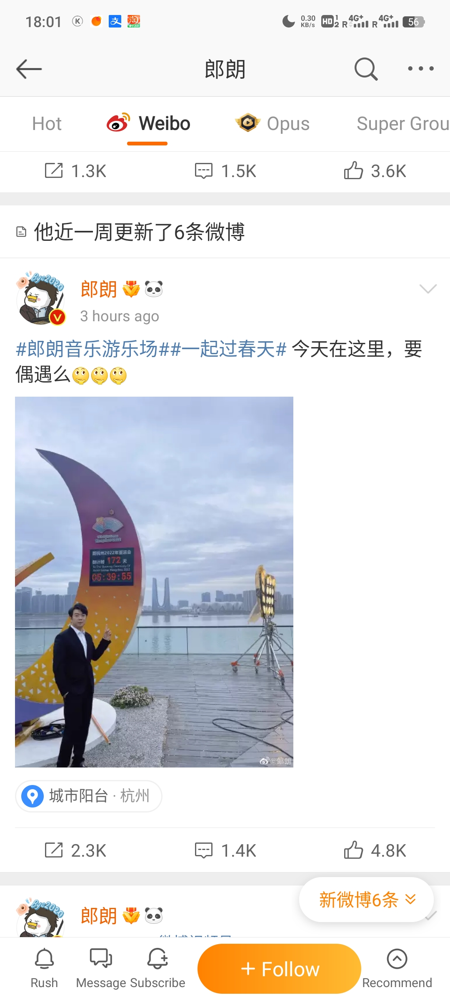
微博照
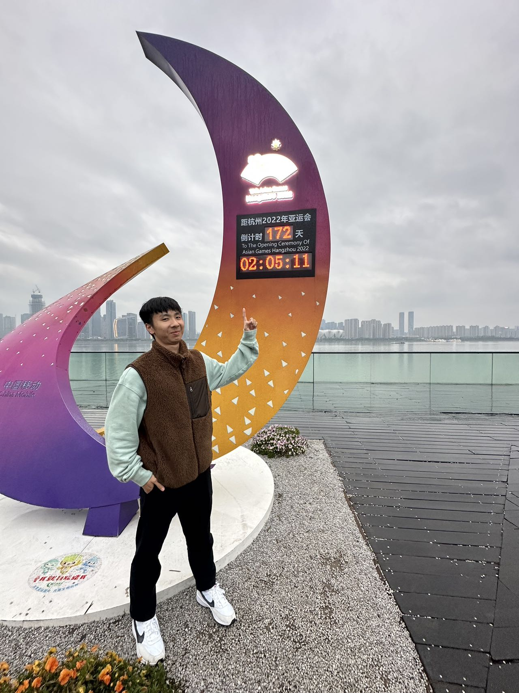
GET同款
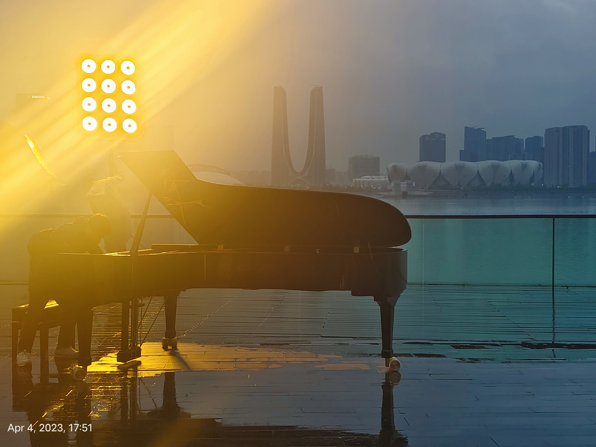
他彈過的鋼琴
19：00 Dinner Time。
20：30 到酒店練習。
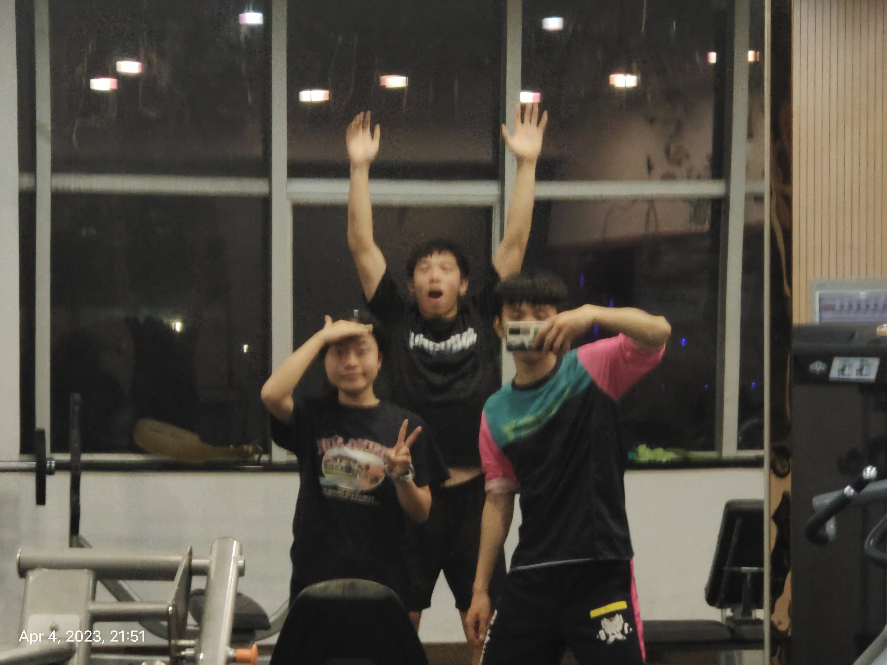
晚課
22：00 HEY個TEA（喜茶）順便把DAY2沒看完的Titanic看完（行吧，沒看完，還剩下30分鐘）。
最後 今天見到郎朗，雖然平時沒關注，但是見到名人總會激動🤣。
導遊問我們要不要買手信（點擊查看圖片 ），我就買了藕粉、黑芝麻丸、胎菊、五眼果（其他還有核桃、海苔、芝麻條）。
倒數第二夜了，不捨得 ( ×ω× ) 。